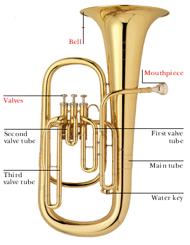

The Euphonium
The euphonium is a brass instrument that derives its name from the Greek word euphonos, meaning "well-sounding" or "sweet-voiced." The euphonium looks like a small tuba and operates very similarly. The euphonium may play in B-flat (see Clarinet for more on transposition) or C. Euphoniums typically don't appear in orchestral music although they are often featured very prominently in band music and marches.
Jokes
What's the difference between a drink machine and a euphonium?
With a drink machine you may actually get a Hi-C.